$\renewcommand{\Diff}{\mathcal{D}}\newcommand{\dist}{\mathrm{dist}}\renewcommand{\Imm}{\mathcal{I}}\newcommand{\Shape}{\mathcal{S}}\newcommand{\R}{\mathbb{R}}\newcommand{\vol}{\operatorname{vol}}\newcommand{\Vol}{\mathrm{Vol}}\newcommand{\Var}{V}$
<h4> Numerical Frameworks for Elastic Shape Analysis<br> using Second Order Sobolev Metrics </h4><hr> <p> Emmanuel Hartman$^1$, Yashil Sukurdeep$^2$, Emery Pierson$^3$, <br>Eric Klassen$^1$, Mohamed Daoudi$^{4,5}$, Martin Bauer$^1$, Nicolas Charon$^4$<br> <br>$^1$Department of Mathematics, Florida State University<br> $^2$Center of Imaging Sciences, Johns Hopkins University<br> $^3$LIX, Ecole Polytechnique<br> $^4$Univ. Lille, CNRS, Centrale Lille, Institut Mines-Télécom, CRIStAL<br> $^5$IMT Nord Europe, Institut Mines-Télécom, Univ. Lille, Centre for Digital Systems<br> $^6$Department of Mathematics, University of Houston<br></p><hr><p> AMS Joint Mathematics Meeting<br> 6 January 2024 </p> <div class="row"> <div class="col-md-6" align="left" markdown="1"> </div> <div class="col-md-6" align="right" markdown="1"> <img src="figs/nsf_logo.png" width="20%" /> </div> </div>
<h4 align="left">Elastic Shape Analysis of Surfaces</h4><hr> <div class="row"> <div class="col-md-7" align="left" markdown="1"> <p> The goal of elastic shape analysis is to define a Riemannian metric on the space of unparameterized surfaces. <!--By the space of unparamerteized surfaces we will consider the quotient given by the space of parameterized surfaces modulo the action of the appropriate reparameterization group.--></p> <hr><p>Let $M$ be a smooth oriented, Riemannian 2-manifold.</p> <p> <b>Parameterized Shapes:</b><br> $\qquad \qquad \qquad \Imm =\operatorname{Imm}(M,\R^3)/\text{translations}$<br> <b>Reparameterization Group:</b><br> $\qquad \qquad \qquad \Diff = \operatorname{Diff}_+(M)$<br> <b>Unparameterized Shapes:</b><br> $\qquad \qquad \qquad \Shape = \Imm/\Diff\qquad [q]=\{q\circ\phi|\phi\in\Diff\}$ </p> <hr> <p>We equip $\Imm$ with a metric $G$ that is invariant under the action of $\Diff$ and equip $\Shape$ with the quotient metric.<br> </p><hr><p> To solve geodesic boundary value problems between $[q_0],[q_1]\in\Shape$, we find a path between $q_0$ and $q_1\circ\phi$ which minimizes the path energy functional. </p> </div> <div class="col-md-5" markdown="1" align="top"> 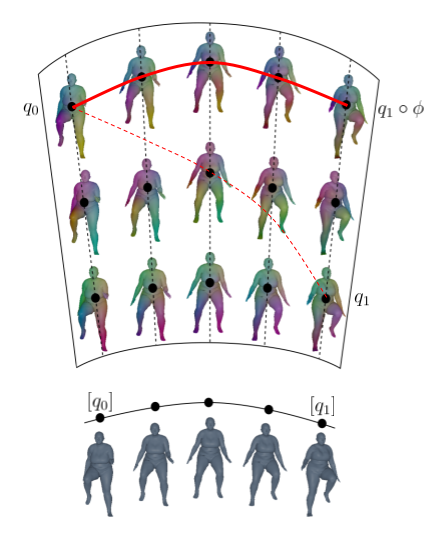<br><br> </div> </div> </div>
<h4 align="left">Relaxed Matching Frameworks</h4><hr> <div class="row", align="left"> <p>We utilize a relaxed matching framework which considers an optimization problem of the form:<br> $$\inf\limits_{\{q\in C^\infty([0,1],\Imm)\,|\,q(0)=q_0\}} \displaystyle\int_0^1 G_{q(t)}(\partial_t q(t),\partial_t q(t)) dt + \lambda \Gamma([q(1)], [q_1])$$</p><br> <div class="col-md-8" markdown="1" align="left"> <p>where $\Gamma$ is a data loss function on $\Shape$ with $\Gamma([p],[q])=0$ if $p\in[q]$.</p> <hr><p>An optimizer, $q$, minimizes the path energy functional and has $q(1)\in [q_1]$.<br> Thus, $q$ is a geodesic and orthogonal to the orbits of $\Diff$.</p> <hr><p>This approach was implemented in [1] for the SRNF metric.</p> <p>$q_0$: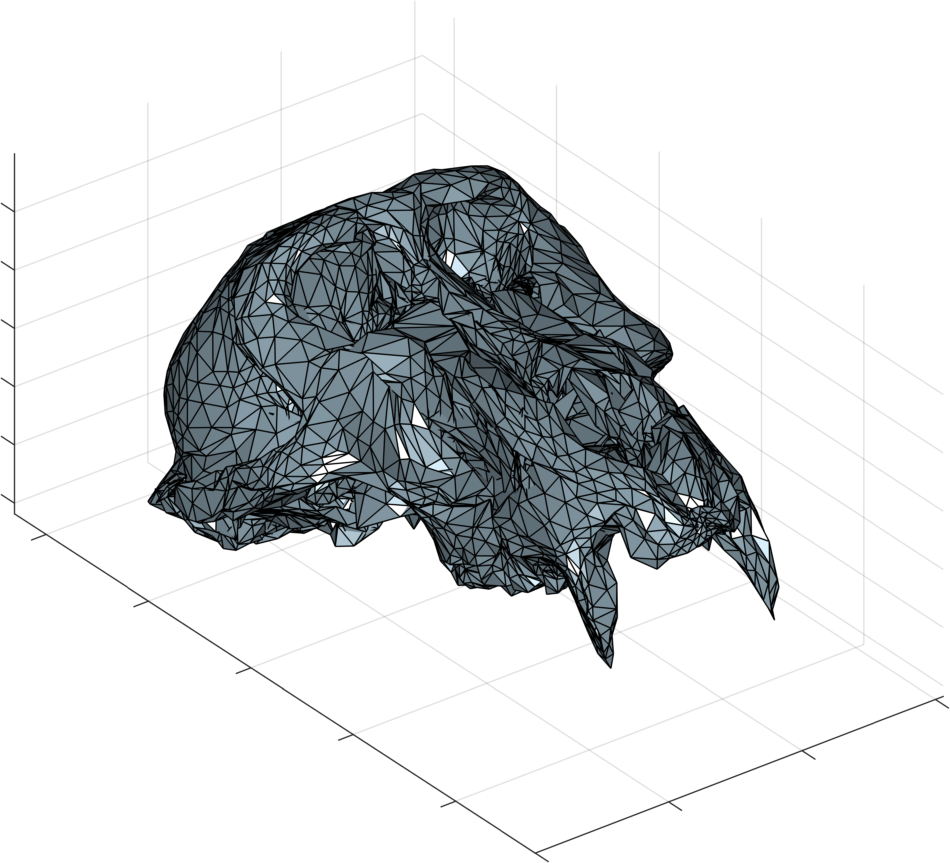$q(0)$:$q(1)$: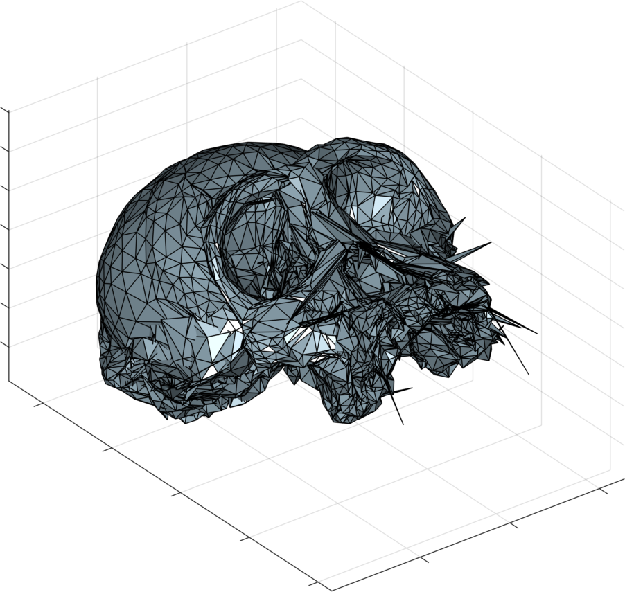$q_1$: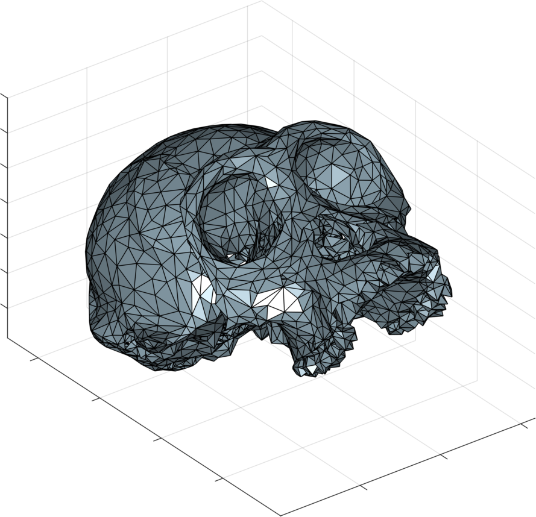</p> </div> <div class="col-md-4" markdown="1" align="center"> 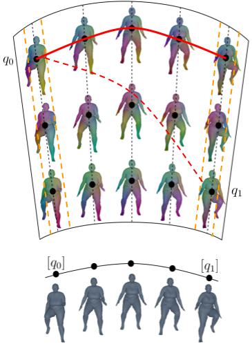<br> </div> <hr><p align="left"><sub>$^1$. Bauer, Charon, Harms, and Hsieh, “A numerical framework for elastic surface matching, comparison, and interpolation”.</sub><br></p> </div>
<h4 align="left">Second Order Sobolev Metrics</h4><hr> <p align="left"> Let $q\in \Imm$ and $h,k\in T_q\Imm$. We let $g_q$ be the pullback metric of the Euclidean metric on $\R^3$. A second order Sobolev metric is then given by \begin{equation} \label{eq:H1metric} G_q(h,k)=\int_M \langle h,k \rangle +g_q^{-1}(dh,dk)+ \langle\Delta_q h,\Delta_q k\rangle\vol_q. \end{equation} where <br> + $dh$ and $dk$ are viewed as a vector valued one forms, <br> + and $\Delta_q$ is the surface Laplacian.<br> </p> <div class="b"><div class="btitle" align="left"><h4>Note</h4></div> <p align="left"> For fixed coordinate we can view $g_q$, $dh$, and $dk$ as matrix fields and \[g_q^{-1}(dh,dk)=\operatorname{tr}(dh\cdot g_q^{-1}\cdot dk^T)\] </p> </div> <p class="fragment fade-in" align="left"> Following the construction of Su et. al.$^1$ we will further decompose the first order term, in four different terms which each have a geometric interpretation. Therefore, we write \begin{equation} dh= dh_m+dh_++dh_\perp+dh_0. \end{equation} </p> <p align="left"><sub>$^1$. Su, Bauer, Preston, Laga, and Klassen, “Shape analysis of surfaces using general elastic metrics”.</sub><br></p>
<h4 align="left">Splitting Second Order Sobolev Metrics</h4><hr> <p align="left"> A straight-forward calculation shows that these terms are orthogonal with respect to the inner product. Thus, we can decompose the first order term of our second order metric producing the following family of second order Sobolev metrics \begin{multline*} G_q(h,k)=\int_M\bigg( a_0 \langle h,k \rangle + a_1 g_q^{-1}(dh_m,dk_m) +b_1g_q^{-1}(dh_+,dk_+)+\\ c_1g_q^{-1}(dh_\bot,dk_\bot)+ d_1 g_q^{-1}(dh_0,dk_0) +a_2 \langle\Delta_q h,\Delta_q k\rangle\bigg)\vol_q. \end{multline*} </p> <div class="b" align="left"><div class="btitle"><h4>Theorem</h4></div><p align="left"> Assume $a_0,a_1,b_1,c_1,d_1,a_2>0$. Then, $\Imm$ equipped with the metric $G$ has a non-vanishing geodesic distance and is invariant under the action of $\Diff$. <!--<hr> <p align="left"><sub>$^1$.</sub><br></p>--> </div> <p align="left"> </p>
<h4 align="left">Varifold Representations$^{1,2,3,4}$</h4><hr> <div class="row"> <div class="col-md-8" markdown="1" align="left"><p> For $[q]\in \Shape$ we can associate a varifold $\mu_q\in\mathcal{M}(\mathbb R^3\times S^{2})$.<br><br> In particular, $\mu_q:= (q,n_q)_*\operatorname{vol}_q$ where $n_q$ is the unit normal map of $q$</p><br><br> <p class="fragment" data-fragment-index="2"> We take a norm $\|\cdot\|_{V}$ on $\mathcal{M}(\mathbb R^3\times S^{2})$ where for $[q],[p]\in\Shape$ the scalar product between the associated varifolds $\mu_{q}$ and $\mu_{p}$ can be written as: \begin{equation*}\label{equ:norm_var} \langle \mu_{q},\mu_{p}\rangle_{V}=\iint_{M \times M}e^{-\alpha||q(x)-p(y)||^2}\langle n_q(x), n_p(y)\rangle^2\vol_{q}(x) \vol_{p}(y). \end{equation*}</p> <br> <span class="fragment" data-fragment-index="3" align="left"> <p>Thus we define our choice of relaxation term as,\[\Gamma([q],[p]):=||\mu_p-\mu_q||^2_{V}=\langle \mu_{p},\mu_{p}\rangle_{V}+\langle \mu_{q},\mu_{q}\rangle_{V}-2\langle \mu_{p},\mu_{q}\rangle_{V}.\]</p> </span> </div> <div class="col-md-4" markdown="1" align="right">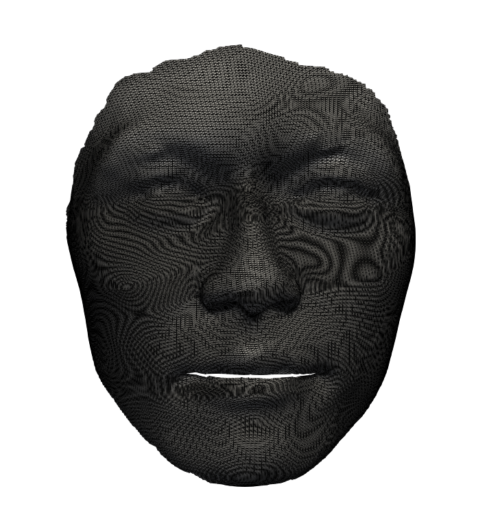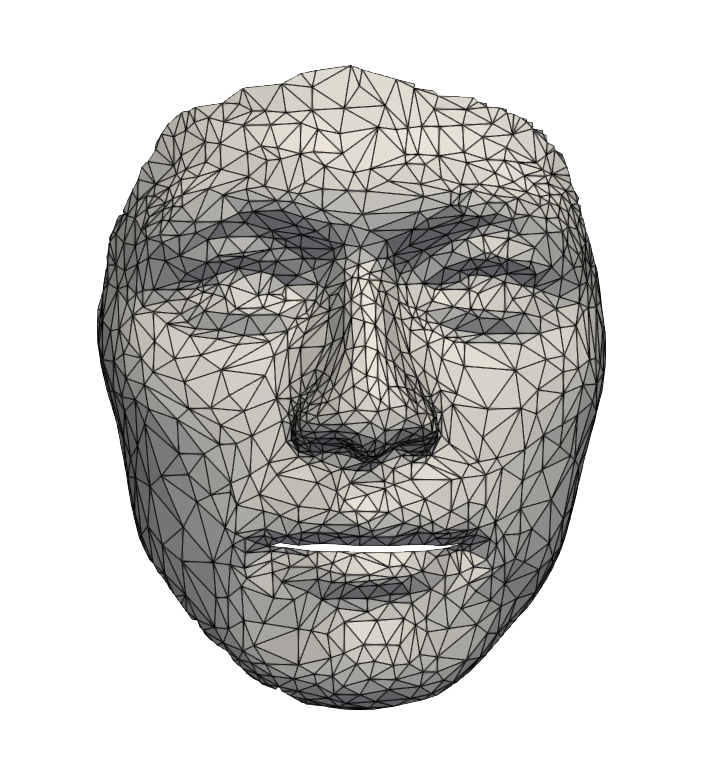<hr><img src="figs/varifold_similar.png" width="100%" /></div> <p align="left"><sub>$^1$Charon & Trouvé. "The varifold representation of nonoriented shapes for diffeomorphic registration."</sub><br> <sub>$^2$Kaltenmark, et al. "A general framework for curve and surface comparison and registration with oriented varifolds."</sub><br> <sub>$^3$Feydy et al. "Optimal transport for diffeomorphic registration"</sub><br> <sub>$^4$ Roussillon & Glaunès. "Representation of surfaces with normal cycles and application to surface registration."</sub><br></p> </div>
<h4 align="left">Solutions to Geodesic Boundary Value Problem</h4><hr> <div class="col-md-5" markdown="1" align="left"> <p> Thus, our relaxed matching energy between $q_0$ and $q_1$ becomes</p><p> $\inf\limits_{q\in C^\infty([0,1],\Imm)|q(0)=q_0} \displaystyle\int_0^1 G_{q(t)}(\partial_t q(t),\partial_t q(t)) dt$ <br> $ \qquad\qquad\qquad\qquad\qquad+ \lambda ||\mu_{q_1}-\mu_{q(1)}||^2_{V}$ <br><br> with choices of the following hyper-parameters: $\alpha,\lambda,a_0,a_1,b_1,c_1,d_1,$ and $a_2$. </p> <p> We discretize this energy for piecewise linear paths via finite differences and triangular meshes via discrete differential geometry. </p> </div> <div class="col-md-4" markdown="1" align="right">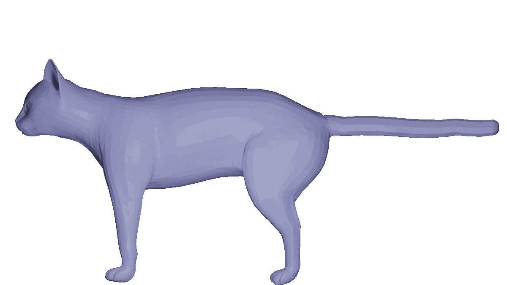<br><img src="figs/ankle.gif" width="38%"/><img src="figs/pose_and_body.gif" width="38%"/></div> <div class="col-md-3" markdown="1" align="left"><img src="figs/faces.gif" width="90%"/> <img src="figs/skulls.gif" width="90%" /></div>
<h4 align="left">Surface Matching Results</h4><hr> <center> <table> 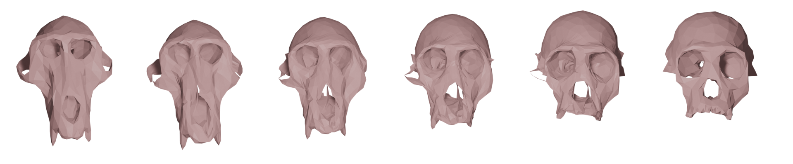 </table> </center>
<h4 align="left">The Varifold Norm and Partial Matching</h4><hr> <p align="left">What to do when there are parts of $q_0$ that are not matched to $q_1$?</p> <table><tr> <td>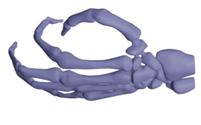</td><td>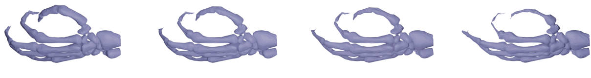</td><td>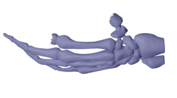 </td></tr></table><p class="fragment" data-fragment-index="2" align="left"> Consider $\omega:M\to [0,1]$ interpreted as the probability that $q_0(x)$ is matched to $q_1$ and use a $\omega-$weighted varifold representation of $[q(1)]$ denoted $\mu_{q(1),\omega}$.<br> Thus, our relaxed partial matching problem becomes $$\inf\limits_{\{\omega:M\to [0,1]\}}\inf\limits_{\{q\in C^\infty([0,1],\Imm)\,|\,q(0)=q_0\}} \displaystyle\int_0^1 G_{q(t)}(\partial_t q(t),\partial_t q(t)) dt + \lambda ||\mu_{q_1}-\mu_{q(1),\omega}||^2_{V}$$ 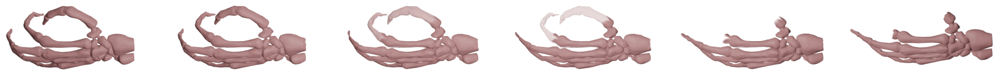 </p>
<h4 align="left">Partial Matching Results</h4><hr> <div class="col-md-7" markdown="1" align="left">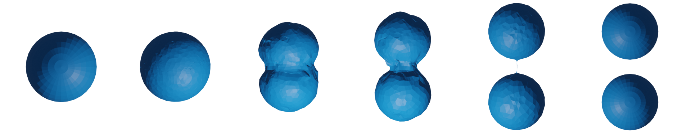<br><br>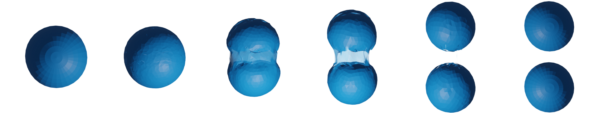<hr>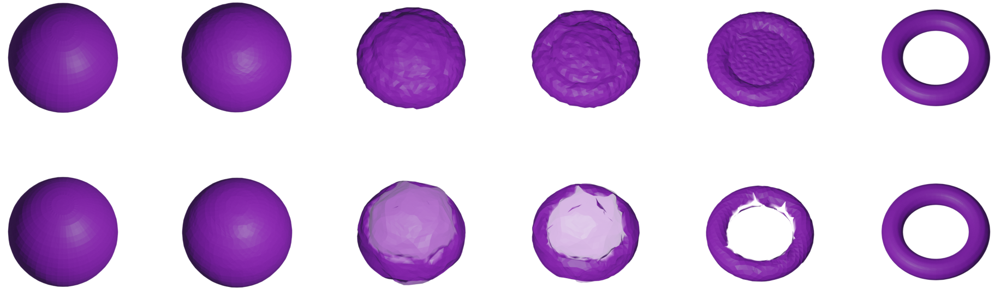</div> <div class="col-md-4" markdown="1" align="left">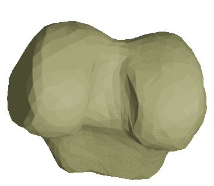</div>
<h4 align="left"> Statistical Analysis Pipeline </h4><hr> <div class="row"> <div class="col-md-4" markdown="1" align="left"> <p>In addition to the relaxed matching framework, with respect to our family of second order sobolev metrics we implement methods for:</p><br><br> <p>- solving geodesic initial value problems.<br><br><p> <p>- computing Frechet means.<br><br><p></p> <p>- performing tangent space principle component analysis.<br><br><p> <p>- performing parallel transport via Schild's (or Pole) ladder schemes.<br><br><p> </div> <div class="col-md-4" markdown="1" align="center"><hr>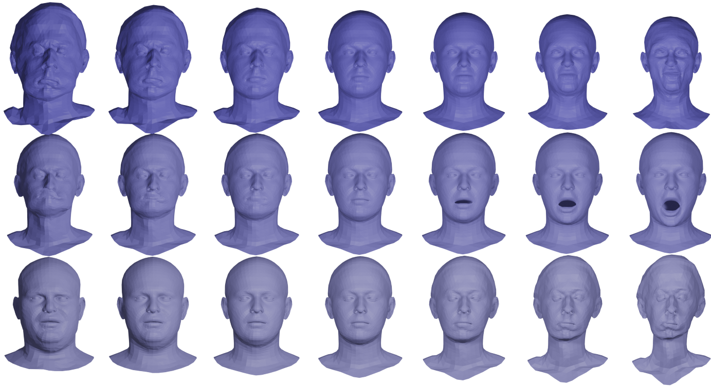<hr>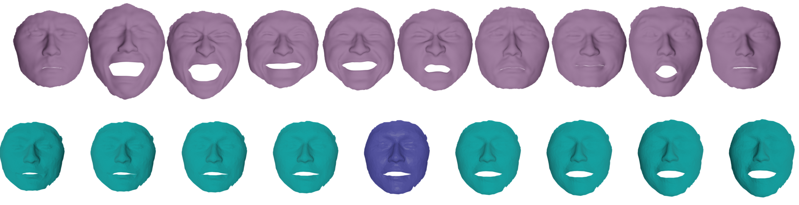</div> <div class="col-md-4" markdown="1" align="left">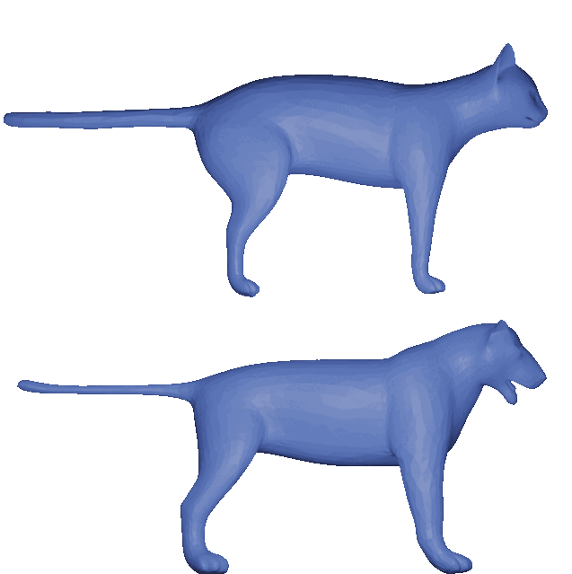<hr>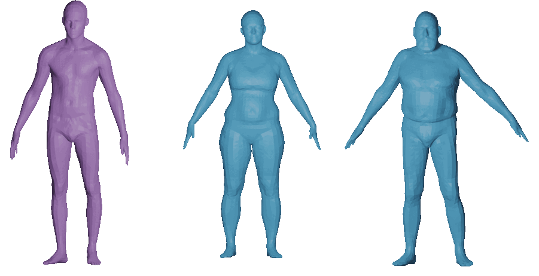</div> </div>
<h4 align="left"> <b>Ba</b>sis <b>Re</b>stricted <b>E</b>lastic <b>S</b>hape <b>A</b>nalysis (BaRe-ESA)</h4><hr> <div class="row" align="left"> <div class="col-md-6" markdown="1" align="left"><p>One drawback of the previous framework is that geodesics with respect to the chosen metric may not correspond to biologically relavent or physically feasible deformations. <br><br> To overcome this we restrict our solutions to the affine subspace of $\Imm$ which can be reached by linearly deforming a template surface, $\mathcal{T}$, by a basis of allowable deformations, $\{h_i\}_{i=1}^n$. </p><br><br> <p>Specifically we consider surfaces in the image of the map \begin{align*}F:\mathbb{R}^n \to \Imm \text{ defined via }\\ (w_1,...,w_n)\mapsto \mathcal{T}+\sum_{i=1}^n w_ih_i .\end{align*}</p></div> <div class="col-md-6" markdown="1" align="center"><br><br><br>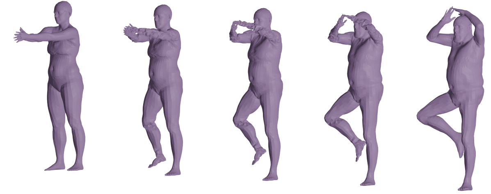</div> </div>
<h4 align="left"> Basis Restricted Elastic Shape Analysis </h4><hr> <div class="row"> <div class="col-md-8" markdown="1" align="left"> <p> We perform our optimizations in the lower dimensional space of coeffecients equipped with the pullback of $G$ via $F$ denoted by $\overline{G}$. <br><br> To find the coeffecients mapped via $F$ as close as possible to the orbit of an arbitrary mesh $q$ we optimize <br> <br> $\inf\limits_{\alpha\in C_0^\infty([0,1],\R^n)\,|\, \alpha(0)=0} \displaystyle\int_0^1 \overline{G}_{\alpha(t)}(\partial_t \alpha(t),\partial_t \alpha(t)) dt + \lambda ||\mu_{q}-\mu_{F(\alpha(1))}||^2_{V}$. <br><br> To solve a geodesic boundary value between $[q_0]$ and $[q_1]$ in our restricted space we relax both enpoints of our path and optimize <br> $\inf\limits_{\alpha\in C^\infty([0,1],\R^n)} \displaystyle\int_0^1 \overline{G}_{\alpha(t)}(\partial_t \alpha(t),\partial_t \alpha(t)) dt $ <br> $ \qquad\qquad\qquad+ \lambda_0 ||\mu_{q_0}-\mu_{F(\alpha(0))}||^2_{V} + \lambda_1 ||\mu_{q_1}-\mu_{F(\alpha(1))}||^2_{V}.$ </p></div> <div class="col-md-4" markdown="1" align="center">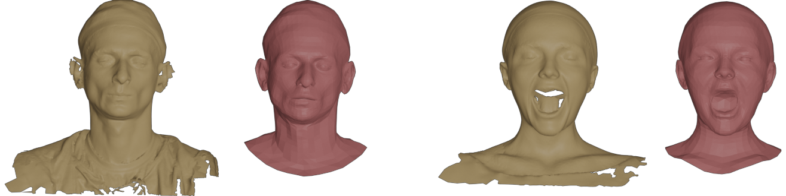<hr>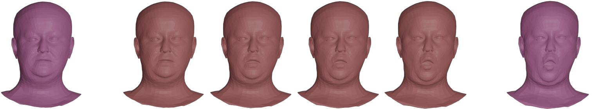<hr>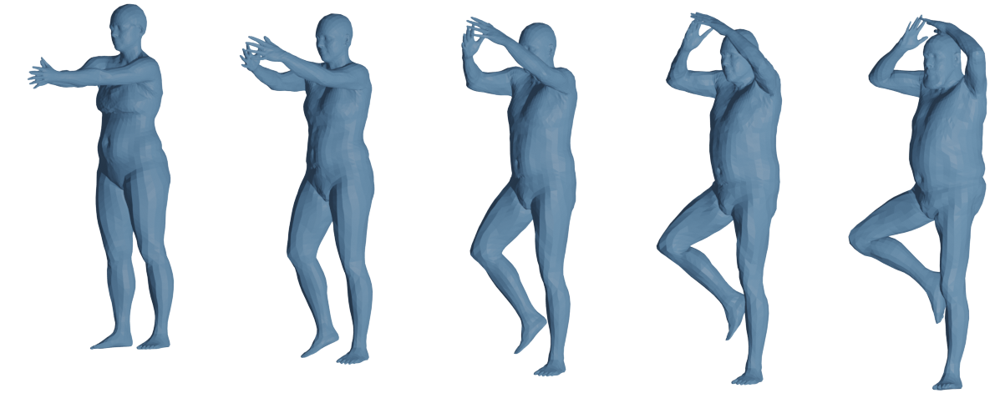</div> </div>
<h4 align="left">Conclusion</h4><hr> <p align="left">We propose a relaxed matching framework for elastic shape analysis of 3D surfaces equipped with a family of elastic second-order Sobolev metrics. Furthermore we discussed:<br><br> </p><div class="row"> <div class="col-md-8" markdown="1" align="left"> <p class="fragment fade-left">+ extending this framework to handle to partial matching tasks.</p> <p class="fragment fade-left">+ statistical analysis methods under the proposed family of metrics.</p> <p class="fragment fade-left">+ restricted subspaces of surfaces which can be expressed with respect to a basis of phisically feasible or biologically relevant deformations.</p> <hr> <p><sub> This talk is based on:<br><a href="https://link.springer.com/article/10.1007/s11263-022-01743-0">"Elastic Shape Analysis of Surfaces with Second-Order Sobolev Metrics", IJCV. </a>,<br> <a href="https://openaccess.thecvf.com/content/ICCV2023/html/Hartman_BaRe-ESA_A_Riemannian_Framework_for_Unregistered_Human_Body_Shapes_ICCV_2023_paper.html">"BaRe-ESA: A Riemannian framework for unregistered human body shapes", ICCV. </a>,<br> <a href="https://arxiv.org/pdf/2311.04382.pdf">"Basis restricted elastic shape analysis on the space of unregistered surfaces"</a>.<br> The code for these projects is available at:<br> <a href="https://github.com/emmanuel-hartman/H2_SurfaceMatch">github.com/emmanuel-hartman/H2_SurfaceMatch</a> and <br> <a href="https://github.com/emmanuel-hartman/BaRe-ESA">github.com/emmanuel-hartman/BaRe-ESA</a><br> These slides are available at:<br><a href="https://www.math.fsu.edu/~ehartman/Slides/JMM2024_Slides/talk.html">www.math.fsu.edu/~ehartman/Slides/JMM2024_Slides/talk.html</a><br> </sub></p> </div> <div class="col-md-4" markdown="1" align="center"> 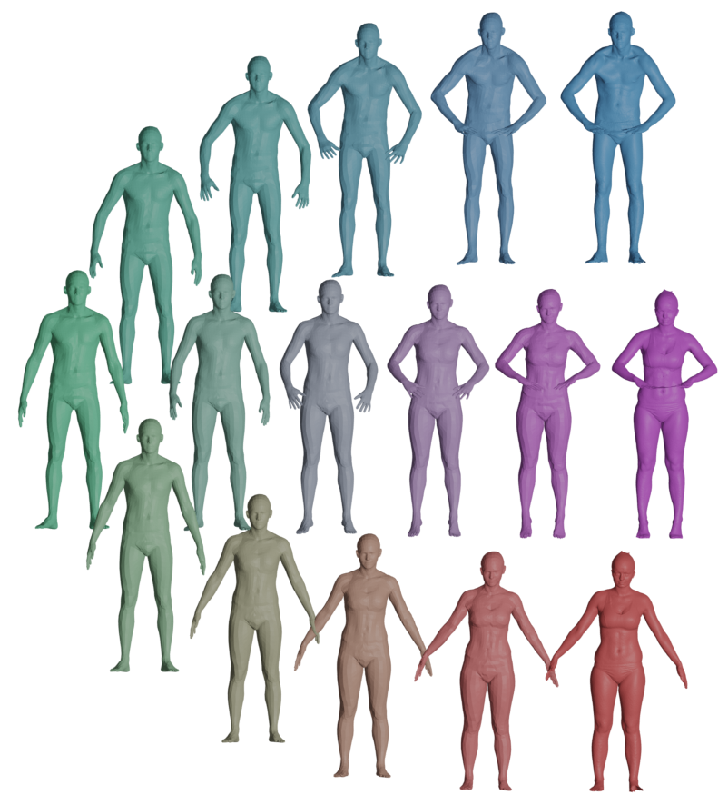 <br><br> <center><p>Thank you for your attention!</p></center>